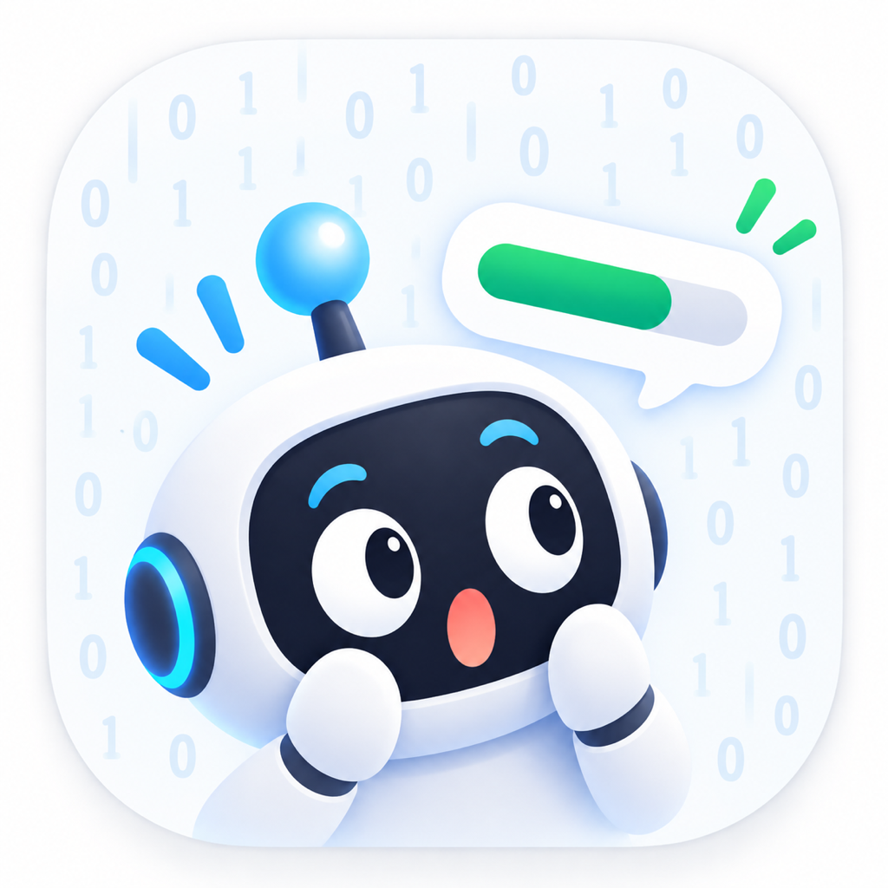

多服务集中查看
统一呈现多个 Agent 服务的剩余额度、重置时间、计划与状态，不必反复切换客户端。

OhMyTokenAI Agent usage dashboard
在 iPhone 与 Mac 上集中查看 Agent 服务的剩余额度、重置时间、使用节奏与本机 Token 消耗。
Core features
从快速确认剩余，到理解消耗节奏，OhMyToken 将常用信息整理成清晰、可行动的本地看板。
统一呈现多个 Agent 服务的剩余额度、重置时间、计划与状态，不必反复切换客户端。
基于设备本地保存的额度历史，观察一小时趋势、近五小时用量速率和预计用完时间。
Mac 版在明确授权后，只读分析本机会话记录，按日期与来源汇总 Codex、Grok Token 消耗。
无需打开完整窗口，在菜单栏查看最低剩余、账号状态和主要额度，随时手动刷新。
通过 Widget 快速掌握最新快照。主应用更新数据后，小组件会按节流策略及时同步。
手动连接的凭证保存在系统钥匙串，额度快照和趋势历史保存在应用沙盒或 App Group 中。
FAQ
不是。OhMyToken 中的 Token 指 AI Agent 和模型处理输入、输出时使用的计量单位，以及账号对应的使用额度。
不需要。应用没有自己的账号系统；你连接的是已经拥有的第三方 Agent 服务账号。
为了透明和可控，本机 Agent 读取默认关闭。请在授权卡片或“设置 → 本机读取”中明确允许。
不代表。相关名称仅用于说明兼容服务。OhMyToken 是独立应用，与所列第三方服务商不存在隶属、赞助或背书关系。